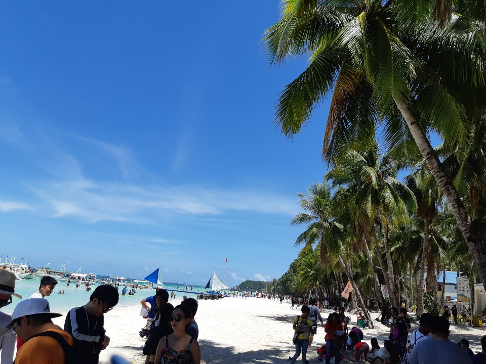

현재에는 아직 첫 발걸음이기 때문에 모든것이 어렵게 느껴질 것이고 막히는 때도 많을 것이다.
하지만 지금 정한 이 길이 나의 마지막 기회이며 선택이라고 생각해야 한다.
그만큼 할 수 있는 노력을 모두 다해 배워 개발자로 거듭나야만 한다.
내가 그리는 미래의 내 모습은 풀스택 개발자가 되기보단 한 분야의 최고전문가가 되는 것이다.
그렇게 하기 위해 끊임없이 노력하고 스스로 탐구하여 새로운 기술에 대해 빠르게 적응해야하며 자신에게 자만하지 않아야 한다.
이 글이 첫 시작이 되어 가까운 미래에 어엿한 개발자가 되어 이 글을 되돌아보며 초심을 잃지 않고 앞으로 나아갈 것이다.
